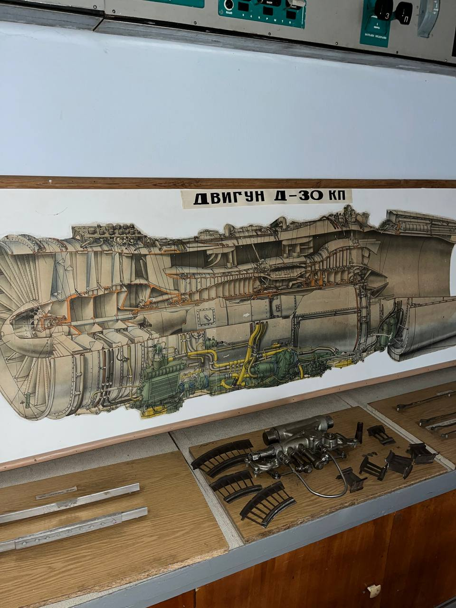

Д-30КП - турбореактивний двигун
Побудований за двовальною схемою і складається з двох основних контурів. Частина повітря проходить через палаюче «серце» двигуна (внутрішній контур), а частина — обтікає його (зовнішній контур), що суттєво підвищує тягу та економічність.
Переглянути